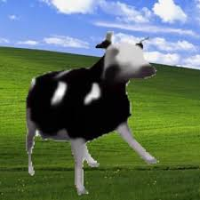

Dancing Polish Cow | 2013
Press the picture!
What is it?
Dancing Polish Cow is a low quality computer-generated cow gif dancing alternately left and right uploaded by the user Dejman on YouTube. The song of this video is called "Gdzie jest biały węgorz ? (Zejście)" by musical artist Cyprian "Cypis" Racicki.
